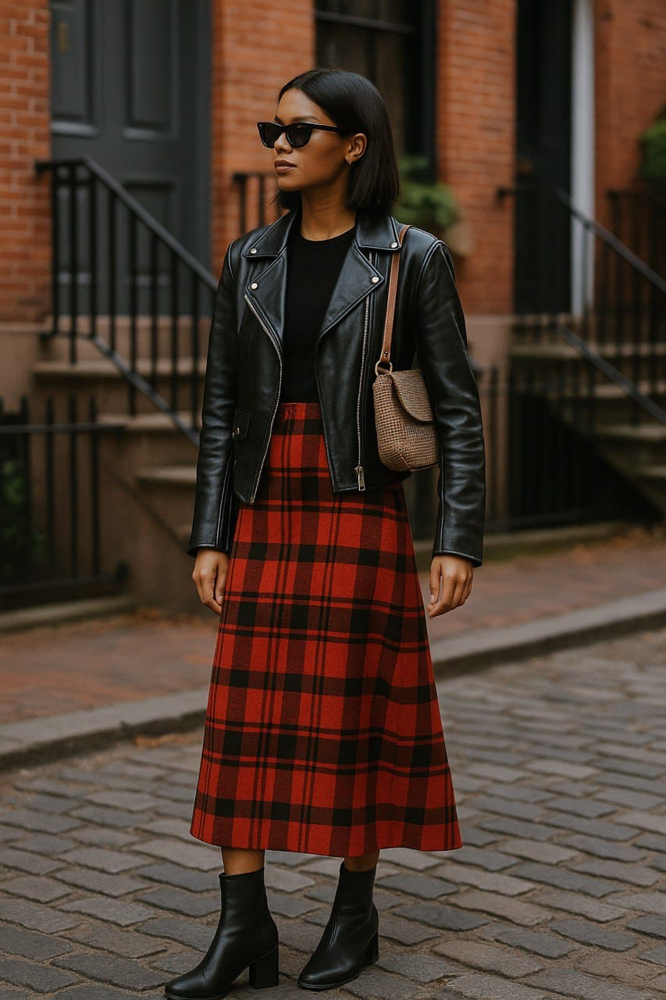

Coast to Coast Style (USA)
Coast to Coast Style (USA): What Makes American Fashion So Split and So Global at the Same Time
American fashion doesn’t follow one direction — it pulls from every edge of its geography. From New York’s cutting precision to California’s sand-soft ease and the Midwest’s nostalgic revival, the United States wears its diversity on every street corner.
To understand American fashion, you can’t just visit one city. You need to travel. Coast to coast. From boroughs to boardwalks, from fields to freeways, the clothes change as fast as the landscape.
There’s no national uniform. No standard silhouette. Instead, American style is a series of visual accents: the slick pace of New York, the minimalist breath of Los Angeles, the worn comfort of the Midwest. And together, these voices don’t clash — they layer.
This is not a coincidence. It’s a reflection of something deeper: America’s identity is not one thread, it’s a patchwork. And nowhere is that patchwork more visible than in what people wear.
East Coast: Edge, Power, and Speed
If fashion is a conversation, the East Coast speaks fast and sharply. It doesn’t wait for permission — it interrupts, asserts, and moves on. The core of this attitude is New York City, where style is both armor and attitude.
You see it in the precision: long tailored coats, pointed boots, pressed pants. You see it in the repetition: black, grey, silver, black again. And you feel it in the walk — fast, straight, don’t make eye contact.
“Style here is fast. If it can’t keep up, it gets left behind.”
Subway platforms are runways. Corner bodegas are backstage. And every outfit is curated with intent: layering done to maximize function, color blocking sharp enough to cut glass, accessories worn with urban swagger.
Think: - Wool trench coats - Leather crossbody bags - Chrome hoop earrings - White sneakers so clean they look staged
Even casual looks aren’t really casual. There’s always a statement: an oversized blazer over a hoodie, a beanie tilted just enough, a monochrome moment that tells you they didn’t just throw this on — they calculated it.
The East Coast look is about claiming space. It’s about walking into a room and letting your silhouette speak before you do.
How Weather Shapes the Look
One underrated influence on East Coast style? The climate.
Cold winters force layers: turtlenecks under hoodies under bombers. Rainy springs demand chic waterproofing. You’ll find fashion here that’s designed to survive wind tunnels and still look runway-ready.
That tension between function and fashion creates a style language that feels resilient, urban, tactical.
It’s not always comfortable. But that’s part of the edge. You wear the discomfort like you earned it. And you probably did.
West Coast: Light, Flow, and Ease
Across the country, the mood shifts — and so does the fabric. California doesn’t wear style the same way New York does. It lets it hover. It lets it breathe.
From the cliffs of Malibu to the murals of Silver Lake, the West Coast aesthetic is airier, more relaxed, more intentionally undone. But don’t confuse that with lazy. There’s precision in the ease.
“You don’t wear the clothes. You float in them.”
West Coast style is all about silhouettes that move: wide-leg pants, breezy button-downs, tanks with drop shoulders, sneakers that look unboxed but lived-in. There’s linen, yes — but it’s paired with tech fabrics. There’s vintage, but it’s styled with organic jewelry or clean white socks. It’s not thrown together — it’s assembled for maximum effortlessness.
What defines it? - Cream, sage, lavender, rust - Bucket hats without irony - Tote bags with philosophical slogans - Gold rings stacked over clean hands
There’s a spiritual softness to it all — a kind of clothing as self-care philosophy. Your skin should breathe. Your outfit should never stress you out. It should say “I’m awake, I’m aware, and I have cold brew in my hand.”
And the influence of this look goes far beyond California. TikTok fashion influencers around the world copy it. Brands from Seoul to Stockholm reference it. The “wellness aesthetic” that dominates Pinterest boards? It’s West Coast rooted.
The Sustainable Shift
Another signature of the West Coast is sustainability — or at least the appearance of it.
Thrifted denim. Slow-fashion startups. Local brands that screen-print by hand. Whether it’s a fashion show in a Venice warehouse or a popup in Echo Park, there’s always a story behind the product.
Even athleisure — which was born and raised in L.A. — now comes in shades of “sustainable beige.” Bike shorts meet natural dye. Hoodies meet hemp.
There’s an irony here too: people who spend hundreds to look like they spent nothing. But again, it’s the effortlessness that counts.
The West Coast isn’t trying to impress. It’s trying to feel good. And that’s its power.
Midwest: Nostalgia, Texture, and Truth
You can’t talk about American fashion without talking about the Midwest — and not just in the cliché cowboy boots and farm-core way. There’s a quieter, richer style language happening between Minneapolis and Kansas City, Detroit and St. Louis. It’s about texture. It’s about memory.
While New York refines and L.A. flows, the Midwest remembers. And it wears those memories like vintage patches sewn across a denim jacket.
Think: - 70s track jackets - 90s graphic tees - Corduroy everything - College sweatshirts tucked into wool skirts
“In the Midwest, fashion doesn’t perform — it preserves.”
People aren’t dressing to impress. They’re dressing because these pieces mean something. A hoodie from a defunct band. A leather belt handed down. A pair of thrifted cowboy boots from an actual ranch.
There’s weight in the outfit. There’s a story.
And that story gets more powerful the older the clothes get. It’s slow fashion not as trend, but as truth. You wear things longer. You repair them. You personalize.
In a culture that moves so fast, the Midwest says, “We’re still here — and we’re still stylish.”
The Midwest Comeback (and the Pinterest Effect)
You might be surprised to know that the Midwest is now one of the most pinned regions on Pinterest when it comes to retro and “soft vintage” fashion. That’s because the authenticity is hard to fake.
People are now copying what the Midwest always did: - Layer heavy knits with oversized flannel - Mix formal with casual (blazer + sneakers) - Prioritize comfort and texture over trend
In 2025, this isn’t rural. It’s revolutionary.
And in an era where everyone is trying to look effortless, the Midwest wins — because it never tried.
Why American Fashion Is Split — and Global at the Same Time
If you look at each coast — and the middle — you could think America has no style identity. But that’s the point: it doesn’t have one. It has dozens. And that’s exactly what makes it global.
Every street in the U.S. becomes its own style city. Every vintage shop, boutique, and bodega builds an ecosystem of looks. And those looks travel — through TikTok, Pinterest, blogs, and tourists.
American fashion is not exported like a single product. It leaks. It slips into the seams of other countries’ styles and gets reinterpreted, re-layered, re-worn.
New York fashion is now in Berlin. California aesthetic rules influencer culture in Brazil. Midwest nostalgia is reborn in Japanese magazines.
Style Atlas Note: American fashion isn’t fractured — it’s fractal. It grows outward in shapes you didn’t expect. That’s what gives it power.
Final Thought: Coast to Coast, But Not Contradictory
You might think New York and California cancel each other out. That you can’t have East Coast power and West Coast flow. But real American fashion takes from both — and more.
A New Yorker now wears linen shorts. A Californian throws on a long coat. Someone in Chicago wears a Brooklyn beanie with a Kansas thrifted jacket.
This cross-pollination is what makes American style relevant everywhere. It’s not the fit. It’s the freedom.
So the next time you try to define American fashion — don’t.
Just look at it. It’s already speaking for itself.
Shop the American Aesthetic
Published: 2025-05-15